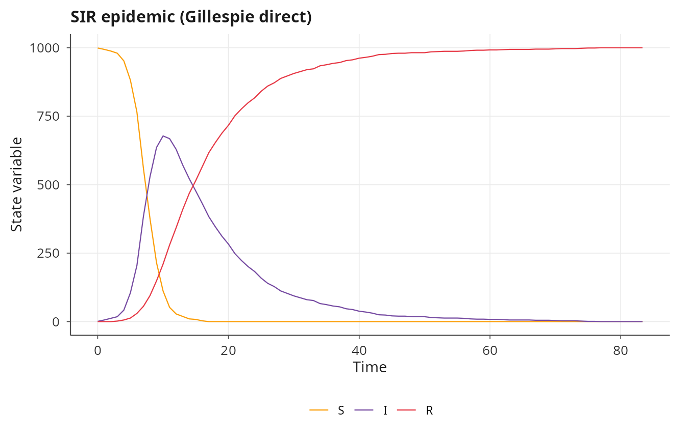
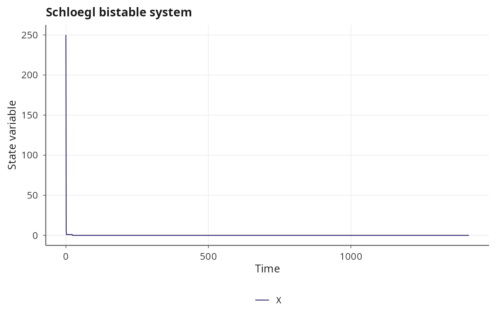
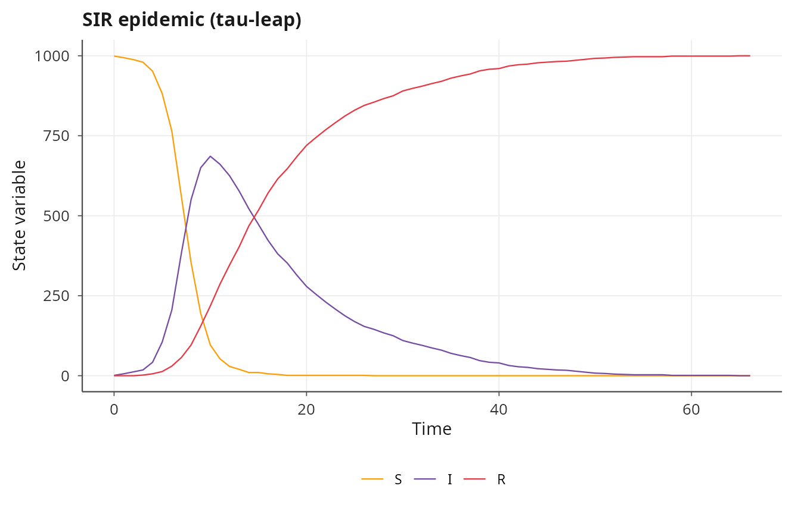
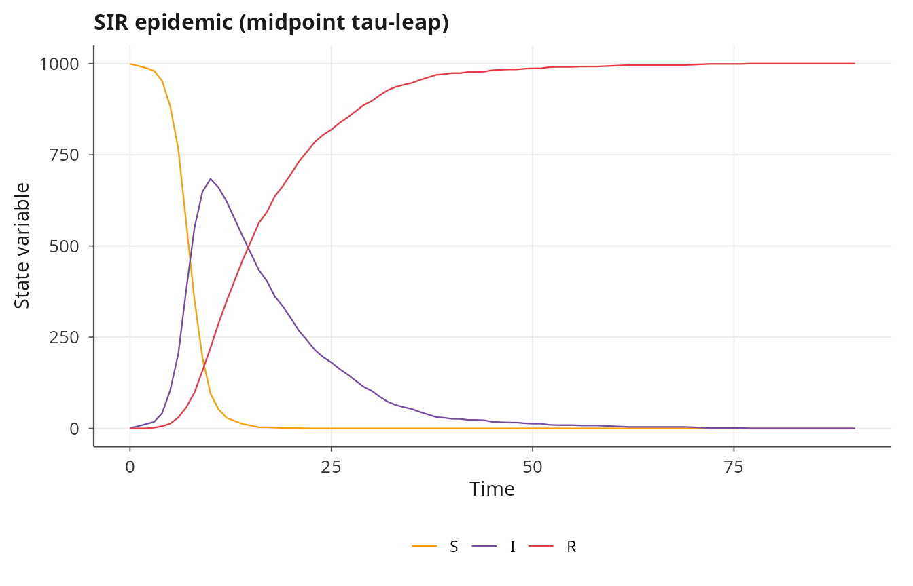
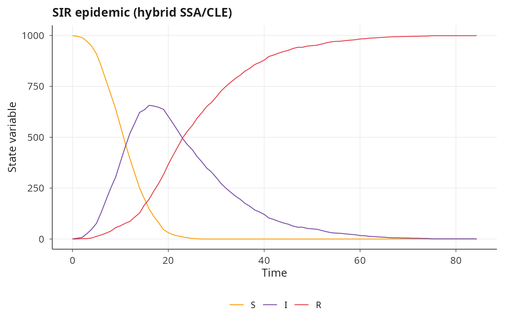
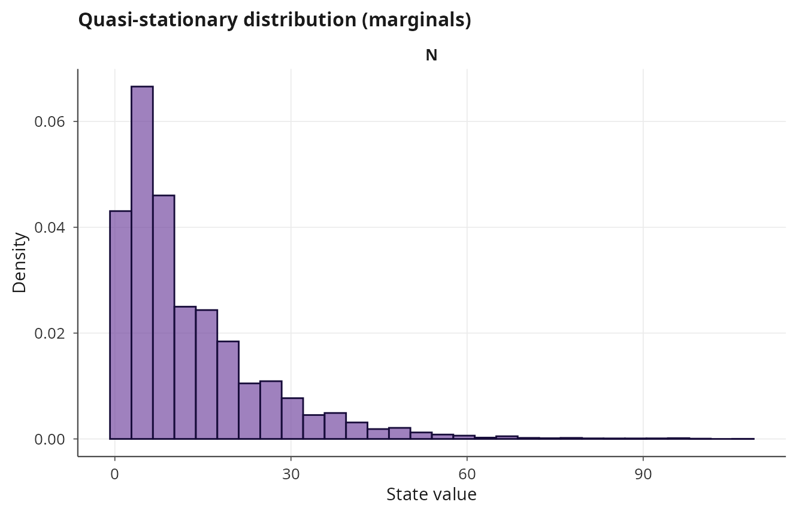
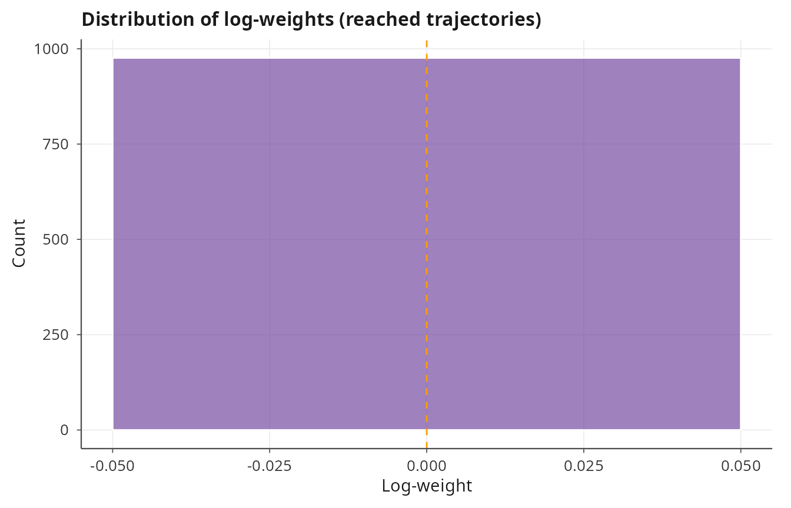
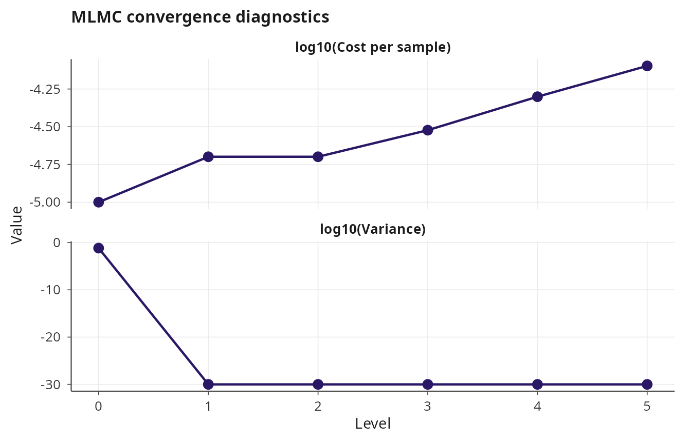

Stochastic simulation of continuous-time Markov chains
Pablo Almaraz, RElab
2026-05-04
Source:vignettes/stochastic-simulation.Rmd
stochastic-simulation.RmdContinuous-time Markov chains in janos
Many biological and chemical systems are naturally described as collections of discrete individuals undergoing stochastic reactions. The continuous-time Markov chain (CTMC) formalism models these systems through a stoichiometry matrix (how each reaction changes the state) and propensity functions (the instantaneous rate of each reaction given the current state). janos compiles propensity formulas to C++ and provides six solver backends spanning exact and approximate stochastic simulation, from the Gillespie direct method through tau-leaping and hybrid SSA/CLE approaches.
Specifying a CTMC model
A CTMC model is defined by passing stoichiometry and
propensities to model_spec(), with
rhs left as NULL. The stoichiometry is a list
of named integer vectors, one per reaction, specifying the net change in
each state variable. The propensities are formulas whose right-hand
sides give the rate of each reaction as a function of the current state
and parameters.
Consider the SIR (susceptible-infected-recovered) epidemic model with mass-action transmission:
sir <- model_spec(
stoichiometry = list(
infection = c(S = -1L, I = 1L, R = 0L),
recovery = c(S = 0L, I = -1L, R = 1L)
),
propensities = list(
infection ~ beta * S * I,
recovery ~ gamma * I
),
state_names = c("S", "I", "R"),
parms = list(beta = 0.001, gamma = 0.1),
init = c(S = 999L, I = 1L, R = 0L)
)
print(sir)
#>
#> Dynamical system
#> ----------------
#>
#> System: CTMC (2 reactions)
#> Reactions: infection, recovery
#> States (3): S, I, R
#> Parameters (2): beta, gamma
#> Default IC: S = 999, I = 1, R = 0
#> Backend: compiled (SSA propensities)The integer suffix on initial conditions (999L,
1L, 0L) signals that the state is discrete,
though janos handles the casting internally. Propensity formulas follow
the same syntax as ODE formulas: state variable and parameter names are
resolved automatically, and the expressions are compiled to C++ on first
use.
Gillespie direct method
The solver_ssa_direct() backend implements Gillespie’s
direct stochastic simulation algorithm [1], which is
exact in the sense that it samples the correct probability distribution
over reaction times and channels. At each step the algorithm computes
all propensities, draws an exponential waiting time from the total
propensity, and selects a reaction with probability proportional to its
individual propensity.
result_direct <- dyn_sim(sir, t_max = 200, solver = solver_ssa_direct(seed = 42),
discard_transient = 0)
#> ⚙ Simulating CTMC reaction network (Gillespie direct)
#> ¡ Reactions: 2 (infection, recovery)
#> ¡ Duration: 200, seed = 42
#> ⏱ Elapsed: 0.01 seconds
#> ✔ Simulation complete: 85 time points, 1999 reactions fired
print(result_direct)
#>
#> Dynamical system simulation
#> ---------------------------
#>
#> System type: autonomous
#>
#> Solver: SSA_DIRECT (1,999 reactions fired)
#> infection: 999
#> recovery: 1,000
#> Simulation: t_max = 200.0, discarding 0.0 transient
#> Attractor points: 85
#>
#> State variables on attractor (mean ± sd):
#> S: 93.4353 ± 266.5167
#> I: 116.0000 ± 183.4872
#> R: 790.5647 ± 327.4102
summary(result_direct)
#>
#> Summary: dynamical system simulation
#> ==================================================
#>
#> Solver: SSA_DIRECT
#>
#> State variable statistics on attractor:
#> variable mean sd min max
#> S 93.4353 266.5167 0 999
#> I 116.0000 183.4872 0 678
#> R 790.5647 327.4102 0 1000
#>
#> Correlation matrix:
#> S I R
#> S 1.000 0.026 -0.828
#> I 0.026 1.000 -0.581
#> R -0.828 -0.581 1.000
#>
#> Dominant periodicity (ACF-based):
#> S: not detected
#> I: not detected
#> R: not detected
plot(result_direct, title = "SIR epidemic (Gillespie direct)")
The seed argument ensures reproducibility. The output
metadata includes the total number of reactions fired and per-reaction
counts, which is useful for verifying that the simulation proceeded as
expected.
Next-reaction method
The next-reaction method (NRM) of Gibson and Bruck [2] maintains a priority queue of putative reaction times and uses a dependency graph to update only those propensities affected by the most recent reaction. This reduces the per-step cost from \(O(M)\) (where \(M\) is the number of reactions) to \(O(\log M)\) for the priority queue operations plus \(O(d)\) for the dependency updates, where \(d\) is the average number of reactions affected.
result_nrm <- dyn_sim(sir, t_max = 200, solver = solver_ssa_nrm(seed = 42),
discard_transient = 0)
#> ⚙ Simulating CTMC reaction network (Gibson-Bruck NRM)
#> ¡ Reactions: 2 (infection, recovery)
#> ¡ Duration: 200, seed = 42
#> ⏱ Elapsed: 0.01 seconds
#> ✔ Simulation complete: 120 time points, 1999 reactions fired
plot(result_nrm, title = "SIR epidemic (next-reaction method)")
For the SIR model with only two reactions, the NRM offers no advantage over the direct method. The gains become significant for models with hundreds of reactions where the dependency graph is sparse.
Modified next-reaction method
Anderson’s modified next-reaction method (MNRM) [3] reformulates the NRM using internal times and unit-rate Poisson processes, avoiding the need to recalculate putative times after each reaction. Instead, it maintains integrated propensities \(P_k(t)\) for each reaction \(k\) and advances time until the next internal clock fires. This yields the same asymptotic complexity as the NRM but can be more numerically stable for models with widely varying propensity magnitudes.
result_mnrm <- dyn_sim(sir, t_max = 200, solver = solver_ssa_mnrm(seed = 42),
discard_transient = 0)
#> ⚙ Simulating CTMC reaction network (Anderson MNRM)
#> ¡ Reactions: 2 (infection, recovery)
#> ¡ Duration: 200, seed = 42
#> ⏱ Elapsed: 0.01 seconds
#> ✔ Simulation complete: 67 time points, 1999 reactions fired
plot(result_mnrm, title = "SIR epidemic (modified next-reaction)")
All three exact SSA variants produce trajectories drawn from the same probability distribution; they differ only in computational efficiency and numerical properties.
A richer example: the Schloegl model
The Schloegl model is a classical bistable chemical system that exhibits a first-order phase transition. It consists of four reactions involving a single species \(X\) with two fixed reservoir species held at constant concentration:
schloegl <- model_spec(
stoichiometry = list(
r1 = c(X = 1L),
r2 = c(X = -1L),
r3 = c(X = 1L),
r4 = c(X = -1L)
),
propensities = list(
r1 ~ c1 * X * (X - 1) / 2,
r2 ~ c2 * X * (X - 1) * (X - 2) / 6,
r3 ~ c3,
r4 ~ c4 * X
),
state_names = "X",
parms = list(c1 = 3e-7, c2 = 1e-4, c3 = 1e-3, c4 = 3.5),
init = c(X = 250L)
)
result_sch <- dyn_sim(schloegl, t_max = 50, solver = solver_ssa_direct(seed = 7),
discard_transient = 0)
#> ⚙ Simulating CTMC reaction network (Gillespie direct)
#> ¡ Reactions: 4 (r1, r2, r3, r4)
#> ¡ Duration: 50, seed = 7
#> ⏱ Elapsed: 0.01 seconds
#> ✔ Simulation complete: 25 time points, 252 reactions fired
plot(result_sch, title = "Schloegl bistable system")
Tau-leaping
When the system contains many molecules and reactions fire at high rates, exact simulation becomes computationally expensive because each reaction is simulated individually. Tau-leaping [4] approximates the process by advancing time by a step \(\tau\) and drawing the number of firings of each reaction from a Poisson distribution with mean \(a_k(x) \tau\), where \(a_k\) is the propensity. The step size is selected adaptively so that the relative change in each propensity remains below a tolerance \(\epsilon\). This converts the simulation from event-driven to time-stepped, trading exactness for speed.
result_tau <- dyn_sim(sir, t_max = 200,
solver = solver_tau_leap(seed = 42),
discard_transient = 0)
#> ⚙ Simulating CTMC reaction network (Adaptive tau-leap (CGP 2006))
#> ¡ Reactions: 2 (infection, recovery)
#> ¡ Duration: 200, seed = 42
#> ⏱ Elapsed: 0.01 seconds
#> ✔ Simulation complete: 68 time points, 1999 reactions fired, 61 leap steps, 1306 SSA steps
plot(result_tau, title = "SIR epidemic (tau-leap)")
Adaptive step rejection
A known problem with tau-leaping is that large steps can drive
species counts negative. janos implements adaptive step rejection: when
a proposed step produces negative states, it halves \(\tau\) and retries, falling back to exact
SSA after a configurable number of rejections
(max_rejections). This ensures non-negative states without
manual tuning.
result_tau_adapt <- dyn_sim(
sir, t_max = 200,
solver = solver_tau_leap(max_rejections = 10, seed = 42),
discard_transient = 0
)
#> ⚙ Simulating CTMC reaction network (Adaptive tau-leap (CGP 2006))
#> ¡ Reactions: 2 (infection, recovery)
#> ¡ Duration: 200, seed = 42
#> ⏱ Elapsed: 0.01 seconds
#> ✔ Simulation complete: 68 time points, 1999 reactions fired, 61 leap steps, 1306 SSA steps
summary(result_tau_adapt)
#>
#> Summary: dynamical system simulation
#> ==================================================
#>
#> Solver: TAU_LEAP
#>
#> State variable statistics on attractor:
#> variable mean sd min max
#> S 116.2500 293.2684 0 999
#> I 145.5294 197.3536 0 686
#> R 738.2206 347.4544 0 1000
#>
#> Correlation matrix:
#> S I R
#> S 1.000 -0.037 -0.823
#> I -0.037 1.000 -0.537
#> R -0.823 -0.537 1.000
#>
#> Dominant periodicity (ACF-based):
#> S: not detected
#> I: not detected
#> R: not detectedThe summary reports the number of rejected steps, which is diagnostic of whether \(\tau\) is too aggressive for the current state.
Midpoint tau-leaping
The midpoint variant [5] evaluates propensities at the midpoint of each step rather than the beginning, which improves the weak-order accuracy from \(O(\tau)\) to \(O(\tau^2)\) at negligible extra cost.
result_mid <- dyn_sim(sir, t_max = 200,
solver = solver_tau_leap_midpoint(seed = 42),
discard_transient = 0)
#> ⚙ Simulating CTMC reaction network (Midpoint tau-leap)
#> ¡ Reactions: 2 (infection, recovery)
#> ¡ Duration: 200, seed = 42
#> ⏱ Elapsed: 0.01 seconds
#> ✔ Simulation complete: 92 time points, 1999 reactions fired, 59 leap steps, 1314 SSA steps
plot(result_mid, title = "SIR epidemic (midpoint tau-leap)")
Hybrid SSA/CLE
For multi-scale systems where some species have large populations
(suitable for continuous approximation) and others have small
populations (requiring discrete treatment), the hybrid solver combines
exact SSA for rare reactions with the Chemical Langevin Equation (CLE)
for frequent reactions. In janos, the solver_hybrid()
backend uses a double-precision state vector and approximates the system
as a CLE, providing a practical middle ground between exact SSA and
purely continuous approximation.
result_hybrid <- dyn_sim(sir, t_max = 200,
solver = solver_hybrid(dt_cle = 0.01, seed = 42),
discard_transient = 0)
#> ⚙ Simulating CTMC reaction network (Hybrid SSA/CLE)
#> ¡ Reactions: 2 (infection, recovery)
#> ¡ Duration: 200, seed = 42
#> ⏱ Elapsed: 0.01 seconds
#> ✔ Simulation complete: 86 time points, 1999 reactions fired, 1999 SSA steps, 10433 CLE steps
plot(result_hybrid, title = "SIR epidemic (hybrid SSA/CLE)")
Quasi-stationary distributions
Many CTMC models have absorbing states, such as extinction (all
individuals of a species reach zero). The quasi-stationary distribution
(QSD) characterizes the long-run behavior of the system conditioned
on non-absorption. The estimate_qsd() function
implements a Fleming-Viot particle method [6]: a
pool of particles are simulated forward; whenever a particle reaches the
absorbing state it is replaced by a copy of a randomly chosen surviving
particle. After a burn-in period, the empirical distribution of the
surviving particles approximates the QSD.
bd <- model_spec(
stoichiometry = list(
birth = c(N = 1L),
death = c(N = -1L)
),
propensities = list(
birth ~ lambda * N,
death ~ mu * N
),
state_names = "N",
parms = list(lambda = 1.0, mu = 1.1),
init = c(N = 50L)
)
qsd <- estimate_qsd(bd, t_max = 100, n_particles = 500,
absorbing = ~ N == 0)
#> ⚙ Estimating QSD via Fleming-Viot (500 particles)
#> ¡ t_max = 100, burn_in = 50%
#> ✔ QSD estimated: 25500 samples, 3796 replacements
print(qsd)
#>
#> Quasi-stationary distribution estimate
#> ------------------------------------------
#>
#> Fleming-Viot particles: 500
#> Absorbing condition: N == 0
#> Samples: 25500
#> Replacements: 3796
#> Absorption rate: 0.1518 per unit time
#>
#> Marginal means on QSD:
#> N: 12.73
summary(qsd)
#>
#> Summary: quasi-stationary distribution estimate
#> ==================================================
#>
#> Algorithm: Fleming-Viot, 500 particles
#> Absorbing condition: N == 0
#> Absorption rate: 0.151840 per unit time
#>
#> Marginal QSD statistics:
#> variable mean sd median
#> N 12.7269 12.496 9
plot(qsd)
Rare event estimation
When the event of interest (e.g., extinction of a species) is rare
under normal simulation conditions, naive Monte Carlo is inefficient
because most replicates never observe the event. The
estimate_extinction() function uses importance sampling to
bias the simulation toward the event of interest and then corrects the
estimator with appropriate weights, yielding reliable probability
estimates with far fewer replicates than brute-force simulation.
rare <- estimate_extinction(bd, target = ~ N == 0, n_runs = 1000,
t_max = 50)
#> ⚙ Estimating rare event probability (1000 runs)
#> ¡ Target: N == 0
#> Run 100 / 1000
#> Run 200 / 1000
#> Run 300 / 1000
#> Run 400 / 1000
#> Run 500 / 1000
#> Run 600 / 1000
#> Run 700 / 1000
#> Run 800 / 1000
#> Run 900 / 1000
#> Run 1000 / 1000
#> ✔ Probability estimate: 0.976000 (SE = 0.004842)
#> ¡ Reached target: 976 / 1000 (ESS = 976.0)
print(rare)
#>
#> Rare event probability estimate
#> -----------------------------------
#>
#> Target: N == 0
#> Method: weighted SSA (importance sampling)
#> Runs: 1000
#> Reached target: 976 / 1000
#>
#> P(target) = 0.976000
#> SE = 0.004842
#> 95% CI = [0.966509, 0.985491]
#> ESS = 976.0
summary(rare)
#>
#> Summary: rare event probability estimate
#> ==================================================
#>
#> Target: N == 0
#> Probability: 0.976000 (SE = 0.004842)
#> 95% CI: [0.966509, 0.985491]
#> Reached: 976 / 1000 runs
#> ESS: 976.0 (efficiency = 97.6%)
#>
#> Log-weight statistics (reached trajectories):
#> Mean: 0.0000
#> SD: 0.0000
#> Range: [0.0000, 0.0000]
#>
#> Bias factors:
#> birth: 1.000
#> death: 1.000
plot(rare)
Multi-level Monte Carlo
Estimating expectations of the form \(E[Q(X(T))]\) for a CTMC is expensive with exact SSA and biased with tau-leaping. Multi-level Monte Carlo (MLMC) [7] resolves this tradeoff by combining estimates from multiple levels of tau-leaping resolution, using coarse levels to reduce variance cheaply and fine levels to reduce bias. The Anderson-Higham coupling [8] ensures that the coarse and fine tau-leap paths share the same Poisson events, which minimizes the variance of the level correction.
mlmc <- mlmc_estimate(
model = sir,
t_max = 100,
quantity = function(x) x["I"],
tol = 1.0,
tau_base = 1.0,
n_warmup = 100,
max_level = 5
)
#> ⚙ MLMC estimation (Anderson-Higham 2012)
#> ¡ max_level = 5, R = 2, tau_base = 1.0000
#> ¡ tol = 1, n_warmup = 100
#> ⏱ Level 0: tau = 1.000000 (100 warm-up samples)
#> ⏱ Level 1: tau = 0.500000 (100 warm-up samples)
#> ⏱ Level 2: tau = 0.250000 (100 warm-up samples)
#> ⏱ Level 3: tau = 0.125000 (100 warm-up samples)
#> ⏱ Level 4: tau = 0.062500 (100 warm-up samples)
#> ⏱ Level 5: tau = 0.031250 (100 warm-up samples)
#> ✔ MLMC estimate: 0.0700 (95%% CI: [0.0197, 0.1203])
#> Total samples: 600 across 6 levels
print(mlmc)
#>
#> Multi-level Monte Carlo estimate
#> --------------------------------------
#>
#> Estimate: 0.0700
#> 95% CI: [0.0197, 0.1203]
#> RMSE: 0.0256
#>
#> Levels: 6
#> Refinement: R = 2
#> Total samples: 600
#> Target tolerance: 1
summary(mlmc)
#>
#> Summary: multi-level Monte Carlo estimate
#> ================================================
#>
#> Algorithm: Anderson-Higham MLMC
#> Target RMSE: 1
#> Achieved RMSE: 0.0256
#> Estimate: 0.070000
#> 95% CI: [0.019739, 0.120261]
#>
#> Per-level statistics:
#> level tau n_samples n_optimal mean_diff variance cost
#> 0.0000 1.0000 100.0000 100.0000 0.0700 0.0658 1.00e-05
#> 1.0000 0.5000 100.0000 100.0000 0.0000 0.0000 2.00e-05
#> 2.0000 0.2500 100.0000 100.0000 0.0000 0.0000 2.00e-05
#> 3.0000 0.1250 100.0000 100.0000 0.0000 0.0000 3.00e-05
#> 4.0000 0.0625 100.0000 100.0000 0.0000 0.0000 5.00e-05
#> 5.0000 0.0312 100.0000 100.0000 0.0000 0.0000 8.00e-05
#>
#> Total samples: 600
#> Refinement factor R = 2
#> Base tau = 1.0000
plot(mlmc)
The quantity argument is a function mapping the terminal
state vector to a scalar. The tol parameter controls the
target root-mean-square error, and the MLMC algorithm automatically
determines the optimal allocation of samples across levels to achieve
this tolerance at minimum computational cost.
References
[1] Gillespie, D. T. (1977). Exact stochastic simulation of coupled chemical reactions. Journal of Physical Chemistry, 81(25), 2340-2361. doi:10.1021/j100540a008
[2] Gibson, M. A., & Bruck, J. (2000). Efficient exact stochastic simulation of chemical systems with many species and many channels. Journal of Physical Chemistry A, 104(9), 1876-1889. doi:10.1021/jp993732q
[3] Anderson, D. F. (2007). A modified next reaction method for simulating chemical systems with time dependent propensities and delays. Journal of Chemical Physics, 127(21), 214107. doi:10.1063/1.2799998
[4] Gillespie, D. T. (2001). Approximate accelerated stochastic simulation of chemically reacting systems. Journal of Chemical Physics, 115(4), 1716-1733. doi:10.1063/1.1378322
[5] Gillespie, D. T. (2003). Improved leap-size selection for accelerated stochastic simulation. Journal of Chemical Physics, 119(16), 8229-8234. doi:10.1063/1.1615760
[6] Villemonais, D. (2011). Interacting particle systems and Yaglom limit approximation of diffusions with unbounded drift. Electronic Journal of Probability, 16, 1663-1692. doi:10.1214/EJP.v16-925
[7] Giles, M. B. (2008). Multilevel Monte Carlo path simulation. Operations Research, 56(3), 607-617. doi:10.1287/opre.1070.0496
[8] Anderson, D. F., & Higham, D. J. (2012). Multilevel Monte Carlo for continuous time Markov chains, with applications in biochemical kinetics. Multiscale Modeling and Simulation, 10(1), 146-179. doi:10.1137/110840546